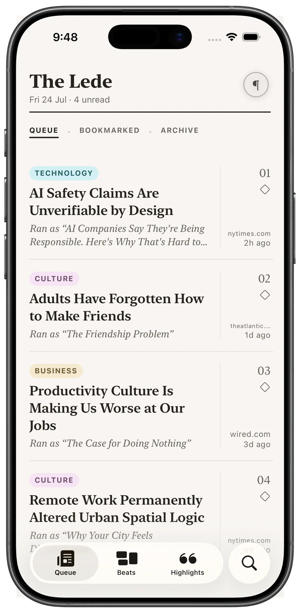
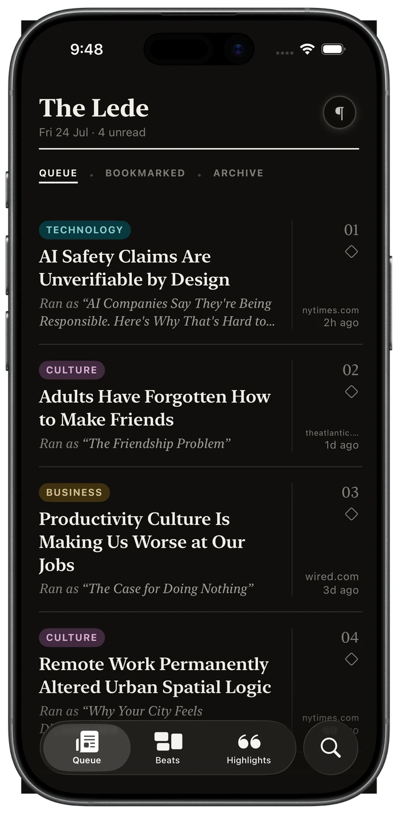

The millionaire who blamed avocado toast had his grandfather’s money.
Ran as “Millionaire: if you stopped buying avocado toast, you could afford a home”
The film sets its words on paper, one line at a time, and a simple drawing acts out each one. A single orange dot stands for the lede.
Free to start: 10 briefs and 2 Dig Deepers a month, no account.
Save anything you mean to read later. The Lede reads it, renames it for what it actually argues, and makes its strongest honest case, so you know if it’s worth your time. When it is, Dig Deeper looks in the research and the reporting around it and lists every source.
The lede
Every save comes back renamed for what it actually argues and filed on its beat, with the headline it ran under kept beside it. Some you’ll read tonight. Some you’ll know you don’t need to.
Ran as
A Glass of Red Wine Equals an Hour at the Gym, New Study Finds
Renamed
The “wine equals a workout” study was run on rats.
Ran as “Millionaire: if you stopped buying avocado toast, you could afford a home”
Ran as “London Is Still Paying Rent to the Queen on a Property Leased in 1211”
Ran as “Scientists Have Reached a Key Milestone in Reversing Aging”


Dig Deeper
Every brief starts by hearing the author out: the strongest honest case the piece makes. When a piece is worth more of your time, tap Dig Deeper. The desk looks in the research and the reporting around it, sets out what others found and where the desk lands, and lists every source it wrote from, each one a link to the original. It can get one wrong, so check the ones that matter to you. Run it on a news story, a how-to, or the history thread you fell into at midnight.
A note on sourcing
The Lede reads every source as it is. It doesn't rank outlets and it reads every one. The one thing it changes: when a piece is opinion, it builds the brief from the original reporting underneath, and shows you the reporting it used. Same rule for every publication. More on how The Lede handles sources.
Deeper on
The “wine equals a workout” study was run on rats.
No wine.
Sample · 8 sources
Rats got resveratrol, far more than a glass of wine holds. The study’s lead author says it used no red wine.
“I built The Lede because I got tired of headlines that bury the story, or sell one that isn’t there.”Charles Klein, maker of The Lede
Nothing to sign up for and no password to make. Your library lives in your own iCloud. The free edition gives you 10 briefs and 2 Dig Deepers a month. Check everything you read with Membership. It gives you 150 Dig Deepers a month, and the desk reads it all. It starts with a 7-day free trial.
A short note when something meaningful ships. No launch spam; the launch is over.